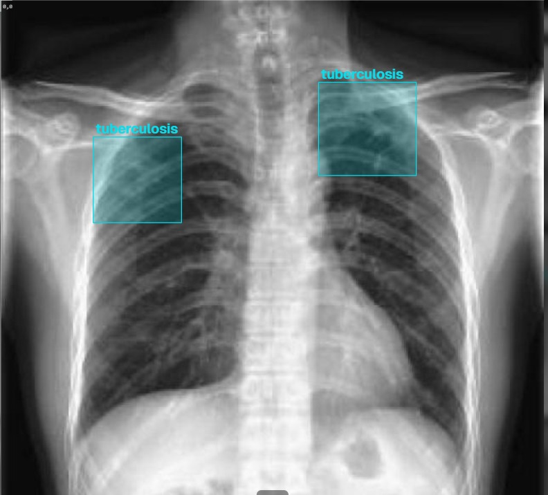
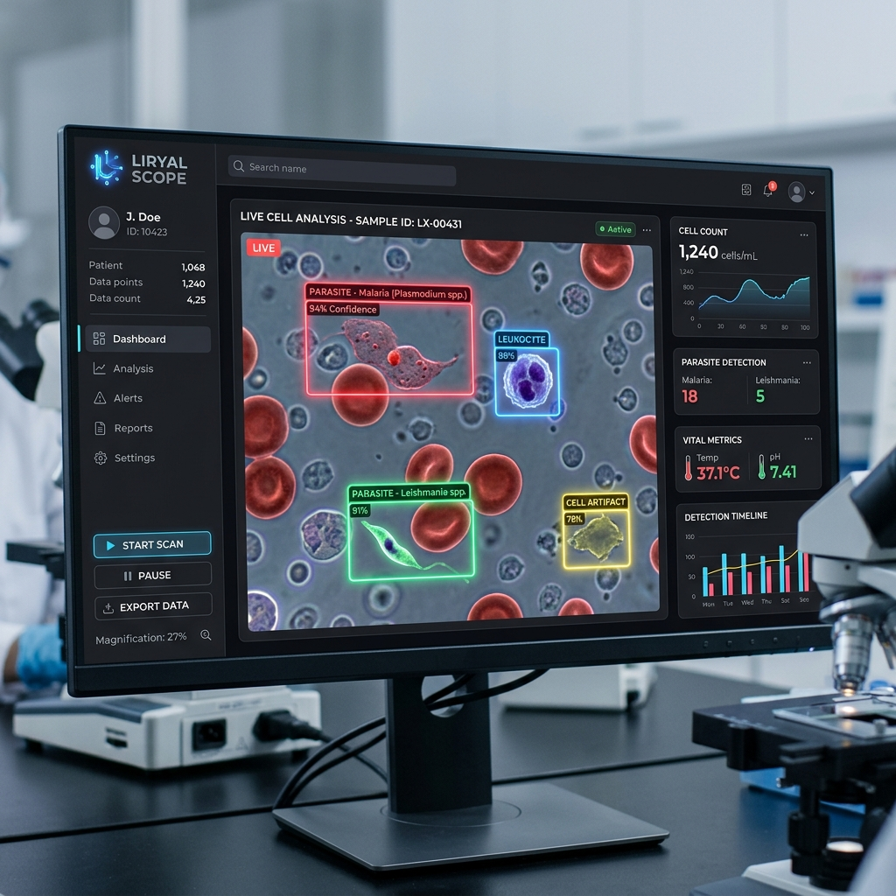

Software como Servicio (SaaS) integral para laboratorios y clínicas en LATAM. Integramos historiales, flujos de trabajo y motores de IA propietarios para radiología, pediatría y microscopía.
Algoritmos de visión computarizada y machine learning entrenados con datos reales, listos para integrarse en flujos de trabajo médicos.

Módulo de Radiología Asistida
Analiza radiografías en milisegundos para detectar automáticamente patrones patológicos con alta precisión, incluyendo tumores pulmonares y tuberculosis.
Predictor de Anemia Infantil
Predicción de riesgo de anemia en pediatría (6 meses a 11 años) utilizando corrección altimétrica en tiempo real. Supera los sesgos de los umbrales estándar de la OMS en altitudes mayores a 2,000 m.s.n.m. sin requerir pruebas invasivas de tamizaje constante.
Masculino · 36 meses · C.S. Carmen Alto, Huamanga
2,761 m.s.n.m.
Variables de entrada (8 features)
Hb registrada
12.1 g/dL
Hb corregida (2,761 m.s.n.m.)
10.8 g/dL
Predicción de riesgo — Score: 0.81
ALTO riesgo de anemia · Score: 0.81
Sin corrección altimétrica, este caso habría salido como normal por los umbrales OMS.
* Caso representativo. No corresponde a paciente real identificable.
Visión Computarizada en Microscopio en Tiempo Real
Nuestro próximo módulo core para el sistema de gestión de laboratorios. Analiza la señal de video del microscopio en tiempo real, detectando patógenos y asistiendo al biólogo de forma automática.
"Un laboratorista examina hasta 300 frotis por jornada. El ojo humano no está diseñado para eso. La fatiga visual acumulada genera falsos negativos."

Nuestra tecnología no es un concepto en papel. Trabajamos en colaboración directa con investigadores biólogos y personal médico de la DIRESA Ayacucho.
+300k
Registros Procesados
SaaS
Modelo de Negocio
Partner Institucional
Ayacucho, Perú
AHORA — Q1/Q2 2026
Entrenamiento y evaluación sobre +300k registros históricos anonimizados. Reclutamiento de los primeros 5 establecimientos piloto.
Q3 2026
Primeros 5 establecimientos en entorno real. Recolección prospectiva de datos bajo protocolo de co-validación.
Q4 2026
Presentación de resultados de sensibilidad/especificidad. Cierre de Cartas de Intención (LOIs) y ronda seed.
2027
Expansión a redes de salud de Puno, Cusco y Junín. Integración con sistemas HIS regionales.
Las primeras 5 instituciones en unirse al piloto recibirán acceso gratuito en la fase beta, un informe de validación sobre sus propios datos, y co-autoría en la publicación académica.